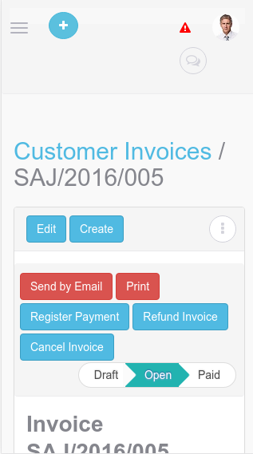
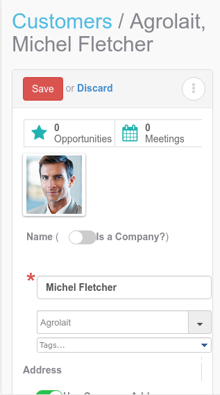

Super Clean User Interface
The Design Employees Love to Use

Simple and Beautifull
Say goodbye to the unresponsive and outdated web client and enjoy the simple and beautiful designed for user delight.

Designed for Productivity
Whether you are at your desk or on the go, you can achieve your goals! Any device + network access + electricity/battery + Odoo 8 Web Mobile Responsive App = increased productivity!

Blazing Fast Speed
Get quick information about customers or products. Quickly assign tasks to your team. The Odoo 8 Web Mobile Responsive App advanced web client uses XMP RPC and loads and displays updated data from forms, lists, kanban, etc, quickly!